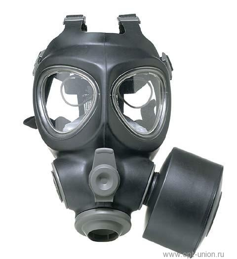

Фільтруючий протигаз ФП-М95У -  один з кращих протигазів в своєму класі. Призначений для захисту органів дихання, зору і шкірних покривів особи від бойових і промислових отруйних речовин, біологічних аерозолів, радіоактивних речовин і грунтової пилу.
Маска виконана з гало-бутилу і оснащена двома лінзами, широким T-подібним обтюратором, переговорної мембраною і 6-точковим змінним текстильним оголів'ям з зручними для його регулювання пряжками і м'якою підкладкою в потиличній частині. Внутрішня маска з силікону оснащена каналами вдиху і видиху, захищеними силіконовими клапанами.
Різьбове з'єднання фільтрів з різьбленням 40 мм передбачає використання фільтрів будь-якого призначення і класу захисту. Маска має інтегрований пристрій для пиття.